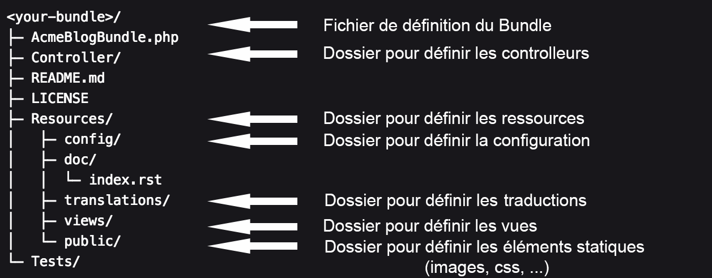

Apprendre Symfony 3
Créer son Bundle
Programme
C'est quoi un Bundle ?
Présentation
- Element principal du framework : tout est un bundle
- Similaire à un plugin ou un module
- Représente une fonctionnalité
- Doit être facile à
- construire
- distribuer
- réutiliser
Un bundle contient :
- des fichiers PHP
- des fichiers de configuration
- des fichiers de templates
- des fichiers CSS
- des fichier JS
Structure de dossier
L' autoloader
( Deux formats : PSR-0 et PSR-4 )
Créer son Bundle
Facile !
php bin/console generate:bundle
Règles pour les noms de bundle
- CameCase !
- 2 mots
- Suffixer avec Bundle (ex: FirstBundle)
Les bundles contributaires
Bundle de la communauté
- Plus de 3096 bundles
- Très souvent libre et réutilisable
- La plupart hébergé sur Github
- Standardisé
Quelques bundles que même ton chat peut utiliser

FOSUserBundle
- https://github.com/FriendsOfSymfony/FOSUserBundle
- Gestion des utilisateurs
- Formulaire d'inscription et de connexion
- Formulaire d'oubli et de renvoi de mot de passe
SonataAdminBundle
- https://github.com/sonata-project/SonataAdminBundle
- Génération automatique de back-office
- Extensible très facilement
- Très bonne modularité des templates et des vues
MopaBootstrapBundle
- https://github.com/phiamo/MopaBootstrapBundle
- Intégration simplifié de la librairie CSS Bootstrap
- Simple d'utilisation
- Choix entre les préprocesseurs SASS et LESS
GenemuFormBundle
- https://github.com/genemu/GenemuFormBundle
- Améliorer vos back-office grâce à des champs de formulaire comme :
- Captcha GD, Recaptcha
- Tinymce
- JQueryDate
- JQueryAutocomplete
- JQuerySlider
- JQueryFile
- JQueryImage
BazingaFakerBundle
- https://github.com/willdurand/BazingaFakerBundle
- Permet de générer des fausses données très facilement
- Tout est dans la configuration
- Executable depuis le terminal
- Parce que le nom est une référence à Big Bang Theory
WebProfilerExtraBundle
- https://github.com/Elao/WebProfilerExtraBundle
- Debug de Twig, du Router, du DIC et d'Assetic
- Intégration à la Web Debug Toolbar
Où trouvez des bundles ?
Héritage de Bundle
- Permet de surcharger des fichiers d'un autre bundle
- Principales surcharge :
- Controllers
- Templates
- Routes
Ex : FosUserBundle
Définir le Bundle parent dans le fichier de définition du Bundle
// src/UserBundle/UserBundle.php
namespace UserBundle;
use Symfony\Component\HttpKernel\Bundle\Bundle;
class UserBundle extends Bundle
{
public function getParent()
{
return 'FOSUserBundle';
}
}
Ex : FosUserBundle
Ajouter un fichier qui correspond à un fichier du Bundle parent
// src/UserBundle/Controller/RegistrationController.php
namespace UserBundle\Controller;
use FOS\UserBundle\Controller\RegistrationController as BaseController;
class RegistrationController extends BaseController
{
public function registerAction()
{
$response = parent::registerAction();
// ... do custom stuff
return $response;
}
}